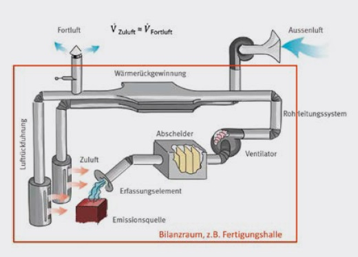
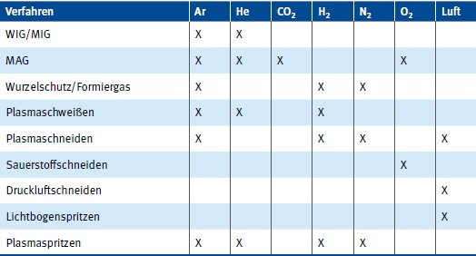
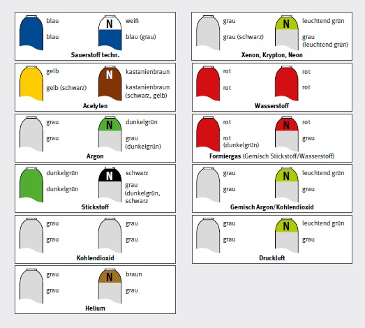
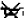

Nahezu alle Lichtbogenverfahren setzen Gefahrstoffe in Form von Schweißrauchen und Gasen frei. Rauche entstehen vorrangig durch Verdampfen von Metall aus der Schmelze. Der Metalldampf kondensiert in der mgebungsluft, wodurch Schweißrauch-Partikel entstehen. Gase werden bei den Lichtbogenverfahren entweder als Prozessgase eingesetzt, z. B. Schutzgase bestehend aus argon- und kohlendioxidhaltigen Gasgemischen, oder durch den Prozess freigesetzt, z. B. Ozon, nitrose Gase. Werden verunreinigte oder mit Anstrichmitteln (z. B. Primer) beschichtete Werkstücke geschweißt, entstehen aus den Verunreinigungen oder Beschichtungen zusätzliche Gefahrstoffe, meist in Form von dampfförmigen Pyrolysestoffen. Die Emissionen steigen über der Freisetzungsstelle (dem Schweißprozess) bedingt durch die Thermik auf und vermischen sich mit der Luft im Arbeitsbereich.
Vor allem beim manuellen Schweißen besteht durch die Nähe der Schweißfachkraft zur Emissionsquelle (Schweißstelle) die Gefahr, dass Schweißrauche und Gase mit der Atemluft eingeatmet werden. Schweißrauche und Gase sind Gefahrstoffe, die unterschiedliche Wirkungen auf die Gesundheit des Menschen haben. Die von Schweißrauchen ausgehenden Gefahren werden oftmals unterschätzt, weil gesundheitliche Beeinträchtigungen oder Erkrankungen in der Regel nur bei langandauernder und intensiver Einwirkung auftreten. Akute Gefahren können jedoch durch Gase hervorgerufen werden, die z. B. in engen Räumen den Luftsauerstoff verdrängen, so dass Erstickungsgefahr besteht.
Die Gesundheitsgefahren sind unter anderem abhängig von den eingesetzten Werkstoffen und Verfahren, denn diese beeinflussen die Menge und Zusammensetzung der Rauche und Gase. Werden unlegierte Stähle geschweißt, besteht der Schweißrauch überwiegend aus Eisenoxid-Partikeln. Gelangen diese in die Lunge, können sie die Lungenfunktion schädigen. Eisenoxid ist "nur" als atemwegsbelastend eingestuft. Andere Stoffe in Rauchen können toxisch (z. B. Kupfer- und Zinkpartikel) oder krebserzeugend (z. B. Chrom(VI)-Verbindungen und Nickeloxid) wirken.
Da Schweißrauche und -gase als Gefahrstoffe eingestuft sind, gilt die Gefahrstoffverordnung (GefStoffV) in Verbindung mit technischen Regeln zu Gefahrstoffen, insbesondere der TRGS 528 "Schweißtechnische Arbeiten". Beide Schriften sind rechtsverbindlich und z. B. auf der Homepage der Bundesanstalt für Arbeitsschutz und Arbeitsmedizin veröffentlicht (siehe: www.baua.de).
Gemäß diesen Arbeitsschutzvorschriften müssen bereits vor Arbeitsaufnahme die mit der Tätigkeit verbundenen Gefährdungen ermittelt, dokumentiert und Maßnahmen getroffen werden, die ein gefahrloses Arbeiten sicherstellen. Kann eine Gefährdung durch Gefahrstoffe nicht ausgeschlossen werden, sind Maßnahmen zu treffen, durch die eine ausreichend gute Luftqualität am Arbeitsplatz erreicht wird. Als ausreichend gut gilt die Luftqualität, wenn z. B. Arbeitsplatzgrenzwerte eingehalten werden.
Hinweise über Schutzmaßnahmen zur Luftreinhaltung liefert die TRGS 528. Bei der Auswahl von Schutzmaßnahmen ist die Rangfolge zu beachten, die durch die Gefahrstoffverordnung vorgegeben ist:
In der Schweißtechnik sind Maßnahmen zur Vermeidung bzw. Reduzierung von Emissionen oftmals Grenzen gesetzt. Konstruktive Vorgaben an das zu erstellende Bauteil bestimmen in der Regel den Werkstoff, das Verfahren und die Anforderungen an die Nahtqualität. Dennoch sollte geprüft werden, ob emissionsarme Verfahren und Werkstoffe (in der Regel Zusatzwerkstoffe) angewendet werden können. Hinweise zu emissionsarmen Verfahren enthält z. B. die TRGS 528. Darüber hinaus liefern auch die Herstellfirmen von Schweißzusatzwerkstoffen in ihren Sicherheits- bzw. Schweißrauchdatenblättern Informationen über Schweißrauchemissionen.
Speziell auf die Schweißtechnik abgestimmte Absauggeräte und Filteranlagen werden von zahlreichen Firmen hergestellt. Üblicherweise erfassen diese die gefahrstoffhaltige Luft im Bereich der Schweißstelle und leiten sie über Rohrleitungen zum Abscheider, in dem die Partikel an Filtermedien abgeschieden werden. Zum Abscheiden von Gasen und Dämpfen lassen sich einzelne Geräte mit zusätzlichen Gasfiltern (z. B. Aktivkohle) ausrüsten.
Die Wirksamkeit von lüftungstechnischen Maßnahmen wird maßgeblich durch die Gefahrstofferfassung bestimmt. Wirkungsvoll sind Einrichtungen, mit denen Gefahrstoffe gezielt an der Freisetzungsstelle (Entstehungsstelle) erfasst werden. Nur erfasste Rauche können in Filtergeräten abgeschieden werden. Nicht erfasste Stoffe gelangen in die Arbeitsbereichsluft und beeinträchtigen die Luftqualität. Lüftungstechnische Einrichtungen ohne gezielte Raucherfassung (z. B. raumlufttechnische Anlagen) bieten beim Schweißen in der Regel nur einen unzureichenden Schutz. Zahlreiche Messungen der Unfallversicherungsträger belegen, dass mit diesen Anlagen, als alleinige Maßnahme eingesetzt, Arbeitsplatzgrenzwerte oftmals nicht eingehalten werden.
Geeignete Absauganlagen zeichnen sich neben einer wirkungsvollen Erfassung auch durch effektive Filtereigenschaften aus. Anforderungen dazu sind in der Norm DIN EN ISO 15012 festgelegt. Entsprechend der Norm müssen Geräte der Schweißrauchabscheideklasse W3 einen Abscheidegrad von wenigstens 99 % haben. Geräte, die nach dieser Norm geprüft und zertifiziert wurden, entsprechen dem Stand der Technik. Unter der Voraussetzung, dass dem Arbeitsraum auch in ausreichender Menge Frischluft (in der Regel Außenluft) zugeführt wird, darf die Abluft dieser Filtergeräte – auch bei Chrom-Nickel-Stahl-Anwendungen – in den Arbeitsbereich zurückgeführt werden (siehe TRGS 528).
Informationen über geprüfte Geräte enthalten:
Die "ausreichende Frischluftmenge" ist durch die VDI-Richtlinie 2262-3 definiert. Für Gefahrstoffe, die Arbeitsplatzgrenzwerten (AGW) unterliegen, muss das Verhältnis Frischluft/Umluft größer als oder gleich 0,43 sein. Für Stoffe, die als Krebserzeugend eingestuft sind, gilt ein Frischluft-/Umluft-Verhältnis von größer als oder gleich 1. Das bedeutet: Bei Krebs erzeugenden Gefahrstoffen muss die Frischluftmenge wenigstens so groß sein, wie die in den Arbeitsraum zurückgeführte Luftmenge.
Bei der Luftzufuhr ist zu beachten, dass die Luft mit geringer Geschwindigkeit und ausreichend temperiert aus den Luftauslässen austritt, da anderenfalls Zugerscheinungen durch Kaltlufteinfall auftreten. Idealerweise sollte die Luft im Raum so geführt werden, dass die Luftströmung im Raum die Gefahrstofferfassung an der Entstehungsstelle unterstützt.
Ein Gesamtkonzept einer lüftungstechnischen Anlage einschließlich Wärmerückgewinnung ist in Abb. 7-1 dargestellt.

Abb. 7-1 Luftführung in einem Arbeitsraum – schematische Darstellung
Bei der Auswahl von Atemschutz ist zunächst zu klären, ob die Tätigkeit einen Schutz entweder gegenüber Partikeln oder gegenüber Gasen oder gegenüber der Kombination aus beiden erfordert.
Prinzipiell sind zum Schutz vor Schweißrauchpartikeln z. B. partikelfiltrierende Halbmasken der Klassen FFP2 und FFP3 geeignet. Bei der Auswahl von Atemschutz ist darauf zu achten, dass dieser auch hinter beziehungsweise unter dem Blendschutz getragen werden kann. Wird ein Handschild als Blendschutz verwendet, ist ein Tragen von Atemschutz üblicherweise problemlos möglich. Dagegen ist das Tragen von Atemschutz unter den Hauben und Helmen für das Schweißen oftmals nicht oder nur mit Einschränkungen möglich. Bewährt haben sich die Hauben der Geräteklasse TH2P und TH3P, die den Anforderungen an Gesichts- und Augenschutz entsprechen. Während der Nutzung dieser Hauben wird der Schweißfachkraft mit Hilfe eines Gebläses gefilterte Atemluft zugeführt. Derartige Filtergeräte sind als nicht belastender Atemschutz eingestuft. Damit gelten für diese Systeme keine Tragezeitbegrenzungen.
Weiterführende Informationen für das Tragen von Atemschutz sind in der DGUV Regel 112-190 "Benutzung von Atemschutzgeräten" festgelegt (siehe http://publikationen.dguv.de).
Schutzgase, Schutzgasgemische und Formiergase sind Prozessgase, die beim Schweißen eingesetzt werden, um primär das Schmelzbad vor unkontrollierten Reaktionen mit dem Luftsauerstoff zu schützen (Tabelle 4). Je nach zu verschweißenden Werkstoffen werden Inert- oder Aktivgase (z. B. Ar, He, CO2) verwendet. Aktivgase haben zusätzlich die Aufgabe, das Reaktionsverhalten des Schweißbades oxidierend oder reduzierend zu beeinflussen. Formiergas kann als Wurzelschutz und zur verbesserten Nahtqualität beim Schweißen dienen. Bei den Schneidverfahren wird Luft u. a. zum Austrag (Ausblasen) der Schmelze verwendet.
Tabelle 4 Prozessgase, die bei Lichtbogenverfahren verwendet werden

Prozessgase können in geschlossenen oder schlecht durchlüfteten Räumen (z. B. in engen Räumen wie Behälter, Vertiefungen) zur Verdrängung der Atemluft führen. Sie können je nach Zusammensetzung und Mischungsverhältnis leichter oder schwerer als Luft sein, sodass sich in Behältern je nach Zusammensetzung oben oder unten Gasansammlungen bilden können. Eine ausreichende Be- und Entlüftung der Arbeitsbereiche ist sicherzustellen.
Schlauchpakete und Schweißbrenner müssen bei Arbeitsunterbrechungen, wie Frühstückspause, Mittagspause oder Schichtwechsel, aus Vertiefungen, Behältern oder engen Räumen entfernt werden, um gefährliche Ansammlungen von Schutzgasen bei eventuellen Leckagen zu verhindern. Die Flaschenventile oder Entnahmeventile in zentralen Versorgungsleitungen müssen geschlossen werden.
Als Formiergas wird häufig Stickstoff (N2) mit Wasserstoff (H2) gemischt. Formiergase können je nach Wasserstoffgehalt brennbar oder sogar explosionsfähig sein. Formiergase mit mehr als 4 % H2 sind zündfähig. Werden diese Gase mit mehr als 10 % H2-Gehalt verwendet, müssen sie an ihren Austrittsstellen kontrolliert abgefackelt werden, um eine explosionsfähige Atmosphäre an der Schweißstelle zu vermeiden. Weitere Informationen können dem DVS-Merkblatt 0937 entnommen werden.
Vor dem Schweißen an Behältern sind diese ausreichend lange und intensiv mit dem Formiergas zu spülen. Enthält das Formiergas mehr als 4 % H2, ist unmittelbar vor Schweißbeginn der O2-Gehalt im Behälter festzustellen und unkontrollierter Lufteintritt, wie durch Nahtspalten, zu verhindern. Der O2-Gehalt im Behälter muss kleiner als 4 % sein.

Abb. 7-2 Farbkennzeichnung von Gasflaschen
Die Gasversorgung besteht aus Gasflaschen oder zentralen Versorgungsleitungen mit Druckminderern, Überdruckmessgeräten für Vor- und Hinterdruck sowie Gasschläuchen. Die Druckminderer müssen für die Gasart geeignet, gekennzeichnet und sicher angeschlossen sein. Anstelle des Hinterdruckmessgerätes kann auch ein Mengenmesser verwendet werden.
Bei rauem Betrieb (z. B. auf Baustellen) haben sich Einzelgasflaschen z. B. mit festmontierten Schutzkappen und integrierten Druckminderern bewährt (siehe Abb. 7-3).
Abb. 7-3 Schutzgasflasche mit fester Schutzkappe
Gasschläuche müssen für die verwendeten Gase geeignet sein und dem höchsten zu erwartenden Betriebsdruck sicher wiederstehen.
Um Verwechselungen brennbarer und nicht brennbarer Gase auszuschließen, dienen für den Anschluss von Flaschendruckminderern am Flaschenventil und für Schlauchanschlüsse nach DIN EN 560:
Überdruckmessgeräte für Sauerstoff müssen deutlich erkennbar und dauerhaft mit dem Bildzeichen

und der Aufschrift "Oxygen" oder dem Buchstaben "O" gekennzeichnet sein.Schläuche sind gegen Abgleiten von den Schlauchtüllen mit geeigneten Mitteln z. B. mit Schlauchschellen zu sichern.
Kennfarben für die Schläuche entsprechend der Gasart sind:
Die Kennzeichnung von Behältern und Rohrleitungen mit Gefahrstoffen ist in der Technischen Regel für Arbeitsstätten (ASR) A 1.3 festgelegt.
Einzelheiten zum sicheren Umgang mit Gasen und den dazu benötigten Geräten und Einrichtungen enthält die DGUV Information 209-011 "Gasschweißer".